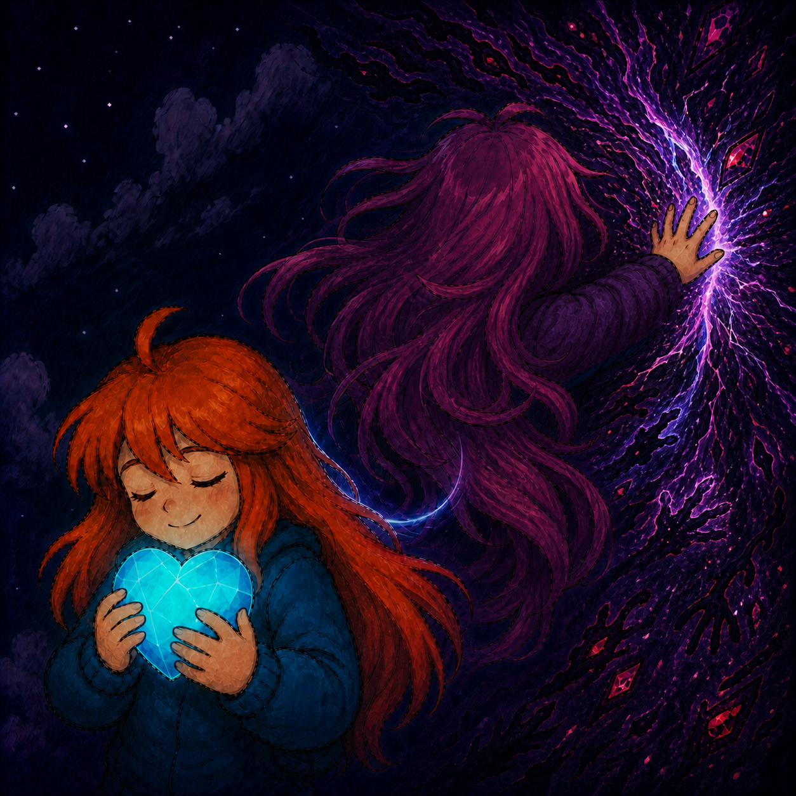

这一篇其实也有一部分昨天的内容
昨天讲微信的头像名称签名一整套都换了，其实主要是名称，其它的都是配合名称。Farewell，和她再见，和过去腐朽的生活再见，和痛苦纠缠的回忆执念再见，和懦弱的自己再见。
这就不得不提到Celeste，18年的神作，第九章Farewell。Madeline收到了奶奶（Granny）去世的消息，必须独自一人，依靠自己学到的一切，登上顶峰。这一章节难度巨大，我甚至都没打。面对失去的痛苦，本身就是一场艰难的攀爬。
原作本身讲述的是Madeline战胜抑郁症的过程，她的阴暗面Badeline开始是她的阻碍，后面两个人格和解，共同登顶Celeste山。我之前也一直拿它当这样一个感人却跟我没什么关系的故事看待。直到我昨天和wkw深聊，我看到她的阴暗面与善良面争夺人格，我又看到自己的阴暗面与善良面是怎么相处的，顿时感慨万千。
wkw小时候只有善良的一面，她的父亲将她完美呵护，于是她的阴暗面没有成长。她有极致的善良，甚至愿意为了陌生人极大地放弃自己的利益。但是在这个世界，这种善良是没有立足空间的。他人看见你善良带来的不加保护的软弱，就会凶残地掠夺你，盘剥你。你奉献一切，然后一无所有，被人抛弃。所以她的善良面被屠杀，她得了抑郁症，外显出很强的阴暗面。以至于她现在看所有人都带阴暗视角，别人的一切行为她都觉得恐惧。
我则在更多元的环境成长，更能接触到真实的世界。我见过各种各样的好人，坏人，我知道什么样的人可能会对我做什么事，于是我的阴暗面和善良面一起成长。我的阴暗面展现出极强的边界感，别人看见我的态度，就知道如果他们欺负我，我会毫不留情地使用阴暗面回击。没有人能够肆无忌惮地掠夺我，我就生活在祥和之中。我的善良面负责守住我的本心，保证对朋友甚至陌生人，我是真诚的人，善良的人，愿意优先付出的人。
上一段感情更教会了我这个道理，对她我完全失去了自我的边界，交出了我的全部，于是我失去了全部。
这就是我悟出的道理，我身体里的Badeline对我而言的意义。她执尖披锐，负责守护我内心最宝贵的东西。她让我善良，但不会成为软柿子；她让我在爱别人的同时，更加懂得爱自己，保护自己。
